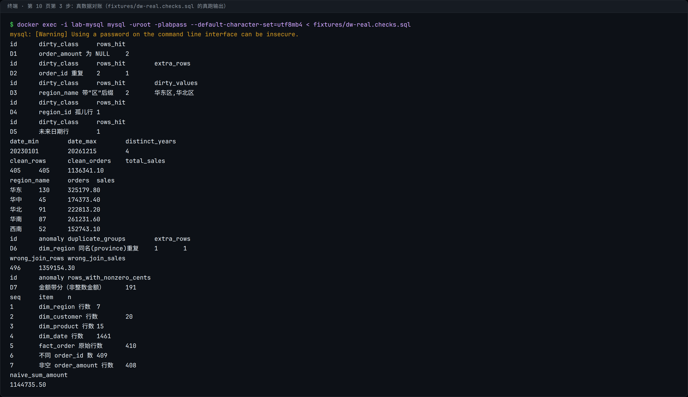
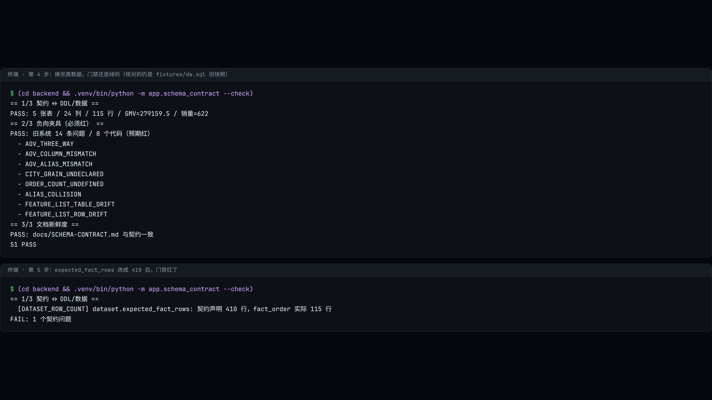

练本 · 阅读版（md 正典派生，改内容请改 manual/page-10.md）
第 10 页 · 换真数据：把演示数据换成甲方数据
前置：第 0 页备好环境；本页接第 1、2 页的
lab-mysql（115 行演示数据），要改的contracts/schema.contract.yaml在仓库里现成就有。不用启动服务。
这一页构建什么
把 lab-mysql 里的 115 行演示数据整份换成甲方真数据（410 行），用 fixtures/dw-real.checks.sql 数出“不洗直接汇总”比正确口径多算 8,394.40，并撞见一件事：契约门禁（自动校验，过不了就不许发布）--check 根本不看库里这份数据。
猜一猜
动手前写下答案：
- 换完数据，
schema_contract --check会拦住这个变化（变红）吗？ - 它到底在核对哪份数据——MySQL 里的
dw库？
动手
以下命令都在仓库根目录执行（有 fixtures/、backend/ 的那一层）：命令逐段复制粘贴即可，但第 5 步要手动打开 contracts/schema.contract.yaml 改一行并保存，不能只靠粘贴走完。
第 1 步：拍快照（口语常说“备份”；这里只备份文件）。
scripts/lab save p10-before
白名单：lab 只跟踪白名单文件（contracts/、compose.yaml、lab/、backend/app/、backend/tests/、fixtures/、frontend/src/）——快照含 lab/（lab/app.py、lab/db.py 都能回滚）。
但不含数据库：库里那 115 行它记不住，第 2 步换完数据后要靠本页末的拆一刀 3 手动重灌回来。
命名规则：名字只能用字母、数字、点、下划线、短横线，且必须以字母或数字开头、最多 64 字符；快照只读，同名 save 会被拒绝——复跑本页要换个名字（如 p10-before-2）。
第 2 步：换数据。 命令和第 2 页灌 dw.sql 同款，只换文件（唯一多出的是那句可省略的 --default-character-set=utf8mb4）：
docker exec -i lab-mysql mysql -uroot -plabpass --default-character-set=utf8mb4 < fixtures/dw-real.sql
第二数据集：dw-real.sql 是和 dw.sql 同结构、同列名的第二数据集，里面自带 CREATE DATABASE dw 和每张表的 DROP TABLE，导入后 dw 的演示数据被整份替换。
中文不靠这个 flag：文件里有 SET NAMES utf8mb4，实测去掉 --default-character-set=utf8mb4 重灌，华东区 入库仍是正确的 UTF-8（HEX E58D8EE4B89CE58CBA）；flag 只是让客户端也统一用 UTF-8，可以省略。
静默导入：和灌 dw.sql 一样，除了密码 Warning 一行都不打印，数要从下一步查。
第 3 步：对账真数据。 这个文件把 7 类脏数据计数、清洗后对账表、原始装数一次跑完：
docker exec -i lab-mysql mysql -uroot -plabpass --default-character-set=utf8mb4 < fixtures/dw-real.checks.sql
第 4 步：跑门禁。
(cd backend && .venv/bin/python -m app.schema_contract --check)
最外层的括号是子 shell：只在括号里切到 backend/，跑完你人还站在仓库根目录——所以后面的 scripts/lab reset 才找得到。
第 5 步：把契约里的期望值改成真值，再跑一次。 打开 contracts/schema.contract.yaml，顶部 dataset: 段的 expected_fact_rows: 115 改成 410（410 是第 3 步数出来的真行数）；先 Ctrl+S 保存，再重跑第 4 步。
只改 expected_fact_rows 这一行，别顺手全改：同段的 date_range、total_amount（还有 total_quantity）对的是 fixtures/dw.sql 那份旧快照，顺手改成“真值”只会多红——实测行数/日期域/总额 3 个字段一起改得到 FAIL: 3，不是本步要的 FAIL: 1。
没保存不红：没保存的话重跑还是绿——红不出来先回去看文件存没存。
你应该看到
第 4 步——换完真数据，门禁还是绿的，报的数还是演示集那套（节选）：
== 1/3 契约 ↔ DDL/数据 ==
PASS: 5 张表 / 24 列 / 115 行 / GMV=279159.5 / 销量=622
S1 PASS
第 5 步——只改契约、没换门禁的数据源，门禁红了：
== 1/3 契约 ↔ DDL/数据 ==
[DATASET_ROW_COUNT] dataset.expected_fact_rows: 契约声明 410 行，fact_order 实际 115 行
FAIL: 1 个契约问题
第 3 步的对账关键行（只摘关键行，中间省略的段落见文件本身；列间是 Tab。每段 SELECT 前先打一行表头：下面这行 id dirty_class rows_hit 就是 D1 的表头，clean_rows clean_orders total_sales、naive_sum_amount 两行同样是表头，不是数据行）：
id dirty_class rows_hit
D1 order_amount 为 NULL 2
D2 order_id 重复 2 1
D3 region_name 带“区”后缀 2 华东区,华北区
D4 region_id 孤儿行 1
D5 未来日期行 1
clean_rows clean_orders total_sales
405 405 1136341.10
D6 dim_region 同名(province)重复 1 1
D7 金额带分（非整数金额） 191
5 fact_order 原始行数 410
naive_sum_amount
1144735.50


对账
- 两个预测都错：换数据后门禁没红，它也不看 MySQL。
backend/app/schema_contract.py里DDL_PATH = REBUILD_ROOT / "fixtures" / "dw.sql"，load_ddl()把这份仓库文件读进内存 SQLite 再核对；文件头也写着“不需要 MySQL / Docker”。 第 4 步那一刻有三份数据在说话：运行库（dw，410 行真数据）、门禁快照（fixtures/dw.sql，115 行演示数据）、契约期望值（expected_fact_rows: 115）。 门禁只读后两份，所以绿。第 5 步把契约期望值改成 410 只是探针：它立刻红（FAIL: 1），正好证明门禁不读运行库。 只换运行库这一份，另外两份还在讲旧故事——门禁绿，不代表数据真。 - 真数据差在哪：不洗不筛直接
SUM(order_amount)（naive）=1144735.50，清洗后 =1136341.10，差 8,394.40。 这笔差只由三行脏数据组成，三笔金额在fixtures/dw-real.expected.json里各带一句可重跑的 SQL：D2 重复订单被同额算两次：+5197.40；D4 孤儿行（region_id=R099）连不到地区表：+1798.00；D5 未来单 2026-12-15（对账基准 2026-11-19）：+1399.00。 5197.40 + 1798.00 + 1399.00 = 8394.40。 - D1（2 行金额为 NULL）不改这个差额：
SUM本来就跳过 NULL。但它和其余几类一起决定行数：410 − 1（重复多出的 1 行）− 2（NULL）− 1（未来）− 1（孤儿）= 405，与第 3 步的clean_rows对上。 - D3 和 D6 不改 naive 总额，改的是“按地区出数”的口径：
region_name里混着华东区/华北区，按契约枚举过滤会漏掉这两个区的单；dim_region里北京市有两行，按province连接会被放大成496 行 / 1359154.30（第 3 步的wrong_join两行）。 D7 的 191 行带分金额要求按DECIMAL(16,2)聚合。7 类脏数据全在，真数据必须洗过才敢报数。 - 契约要不要跟着改？要，但只改契约不够：门禁读的
fixtures/dw.sql也得换成真数据，而真数据原始导出件直接冒充fixtures/dw.sql装不进内存 SQLite——卡在 SQLite 不支持的ALTER TABLE fact_order DROP PRIMARY KEY（sqlite3.OperationalError: near "PRIMARY": syntax error，裸 traceback，不是契约报错）；重复order_id在它后面才 INSERT，根本执行不到。 运行库、门禁快照、契约期望值三处必须一起换；本页正式换的只有运行库，契约只临时改行数当探针（拆一刀 2 会还原），其余两处的统一留到 L3 的“单一数据源”任务。
你现在拥有：一份带 7 类脏数据的真数据集、一条把 8,394.40 差在哪说清楚的对账链，和一条结论——门禁只护它读的那份快照，换数据要换三处。
拆一刀
- 契约现在停在
expected_fact_rows: 410，门禁红着。再拆一刀：把metrics:里name: GMV那条的expected_value: 279159.5改成1，保存，重跑--check，红会多一条——契约写错，门禁拦得住（只摘新冒出来的那条）：
[METRIC_VALUE_MISMATCH] metric.GMV: 公式实际值 279159.5 ≠ 契约期望 1
FAIL: 2 个契约问题
-
还原：
scripts/lab reset p10-before --yes，末行是现在工作区与快照 "p10-before" 完全一致。；再跑--check回到S1 PASS。这个绿是假绿：门禁又对着 115 行的旧快照说“没问题”。 -
数据库不跟着还原：
lab只管文件。先数一次docker exec lab-mysql mysql -uroot -plabpass -N -B dw -e "SELECT COUNT(*) FROM fact_order;"——还是410。 本页的收尾动作：① 拆一刀 2 的reset把契约和文件还原（不做的话下一关第 11 页验收的--check会红）——必做；② 要回 L1 演示态才需重灌fixtures/dw.sql回到 115 行——第 12 页第 1 步会自己重灌dw-real，不重灌也能直接进下一页。 只是真数据下WHERE region_name='华北'是 35 行 / 61890.00，不是演示集的 19 行 / 41099.5，留着演示态才对得上。重灌命令：
docker exec -i lab-mysql mysql -uroot -plabpass < fixtures/dw.sql